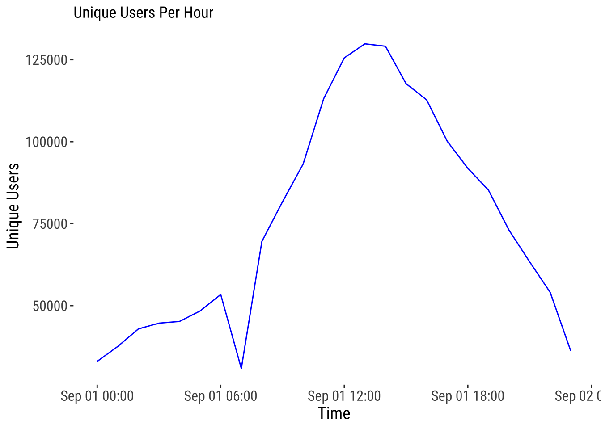

The following objects are masked from 'package:stats':
filter, lag
The following objects are masked from 'package:base':
intersect, setdiff, setequal, union
library(sf)
Linking to GEOS 3.11.0, GDAL 3.5.3, PROJ 9.1.0; sf_use_s2() is TRUE
library(ggplot2)library(tmap)
Breaking News: tmap 3.x is retiring. Please test v4, e.g. with
remotes::install_github('r-tmap/tmap')
library(viridis)
Loading required package: viridisLite
library(spdep)
Loading required package: spData
To access larger datasets in this package, install the spDataLarge
package with: `install.packages('spDataLarge',
repos='https://nowosad.github.io/drat/', type='source')`
Reading layer `uk-local-authority-districts-2021' from data source
`/Volumes/rdm04/DEBIAS/data/inputs/geographies/hexboundaries/uk-local-authority-districts-2021.geojson'
using driver `GeoJSON'
Simple feature collection with 382 features and 3 fields
Geometry type: GEOMETRY
Dimension: XY
Bounding box: xmin: -6e-04 ymin: -0.0673 xmax: 0.0537 ymax: 0.0013
Geodetic CRS: WGS 84
Digital trace data from Alexei
locomizer-ffall-spatial
This first line defines the data source to be analysed. We have one option:
locomizer-ffall-spatial
dfd <-"locomizer-ffall-spatial"
if (dfd =="locomizer-ffall-spatial") { df_pop_dfd <-read.csv(paste0(wd, "/data/inputs/locomizer/LOCOMIZER SAMPLE DATA_NOV_2024/TOP 100 UK CITIES_H3_lvl11_FOOTFALL/Manchester_H3_lvl11_2024-09-01_UK.csv")) df_mov_dfd <-read.csv(paste0(wd, "/data/inputs/locomizer/LOCOMIZER SAMPLE DATA_NOV_2024/TOP 100 UK CITIES_H3_lvl11_DESTINATION-lvl10_ORIGIN/Manchester_Origin_Hex_H3_lvl10_Destination_Hex_H3_lvl11_2024-09-01_UK.csv")) #%>% #filter(time == "2021-03")}
Below we see the dataframe of active users, for one day, aggregated by hexagon.
head(df_pop_dfd)
CODE DAY_TYPE DAY MONTH YEAR MOVEMENT_MODALITY DWELL_TIME
1 8b19424d9a10fff 2 1 10 2024 ALL 0.28909463
2 8b1951b46b0cfff 2 1 10 2024 ALL 0.01162791
3 8b19424da94dfff 2 1 10 2024 ALL 0.18335366
4 8b19424d86f3fff 2 1 10 2024 ALL 0.04414982
5 8b19424daa21fff 2 1 10 2024 ALL 0.08299060
6 8b1951b716a4fff 2 1 10 2024 ALL 0.15136566
EXTRAPOLATED_NUMBER_OF_USERS EXTRAPOLATED_NUMBER_OF_SIGNALS
1 106.137428 2171.735063
2 8.164418 8.164418
3 138.795098 1102.196366
4 146.959516 163.288351
5 24.493253 48.986505
6 228.603691 791.948500
But, there is something odd about it. The number of rows is different from the number of different hexagons. Why? This would make sense if there were different time windows, but there aren’t (at least not reported).
nrow(df_pop_dfd)
[1] 116509
length(unique(df_pop_dfd$CODE))
[1] 43404
# Creating a new sf called "sf_pop_h3" by performing the following operations:# Grouping the rows of the "df_mov" data frame by the "date" columnsf_pop_h3 <- df_pop_dfd %>%group_by(df_pop_dfd$CODE) %>%# Summarizing the grouped data by calculating the total sum of the relevant columnsummarise(total =sum(EXTRAPOLATED_NUMBER_OF_USERS)) %>%rename("CODE"="df_pop_dfd$CODE")sf_pop_h3$geometry <-h3_to_geo_boundary_sf(sf_pop_h3$CODE)$geometry sf_pop_h3 <-st_as_sf(sf_pop_h3, sf_column_name ="geometry")
# Plot the mapggplot(data = sf_pop_h3) +base_map(st_bbox(sf_pop_h3), basemap ='google-terrain', increase_zoom =2) +geom_sf(aes(fill =log(total)), size =0.1) +scale_fill_viridis_c(option ="viridis") +# theme_map_tufte() + labs(fill ="log(Total)", title ="Map of total footfall for one day \n(October 1st 2024)", ) +theme_map_tufte()
Spatial resolution is lower, but it is aggregated by the hour!
length(unique(df_pop_dfd$CODE))
[1] 6359
# Creating a new sf called "sf_pop_h3" by performing the following operations:# Grouping the rows of the "df_mov" data frame by the "date" columnsf_pop_h3 <- df_pop_dfd %>%group_by(df_pop_dfd$CODE) %>%# Summarizing the grouped data by calculating the total sum of the relevant columnsummarise(total =sum(EXTRAPOLATED_NUMBER_OF_USERS)) %>%rename("CODE"="df_pop_dfd$CODE")sf_pop_h3$geometry <-h3_to_geo_boundary_sf(sf_pop_h3$CODE)$geometry sf_pop_h3 <-st_as_sf(sf_pop_h3, sf_column_name ="geometry")
# Plot the mapggplot(data = sf_pop_h3) +base_map(st_bbox(sf_pop_h3), basemap ='google-terrain', increase_zoom =2) +geom_sf(aes(fill =log(total)), size =0.1) +scale_fill_viridis_c(option ="viridis") +# theme_map_tufte() + labs(fill ="log(Total)", title ="Map of total footfall for one day \n(October 1st 2024)", ) +theme_map_tufte()
# Aggregate data to count unique users per hourhourly_unique_users <- df_pop_dfd %>%group_by(YEAR, MONTH, DAY, TIME_INTERVAL) %>%summarise(total =sum(NUMBER_OF_USERS), .groups ="drop") %>%subset(TIME_INTERVAL !=25)# Combine `date` and `hour` into a single datetime column for plottinghourly_unique_users <- hourly_unique_users %>%mutate(datetime =as.POSIXct(paste(YEAR, MONTH, DAY, TIME_INTERVAL, sep ="-"), format ="%Y-%m-%d-%H"))
ggplot(hourly_unique_users, aes(x = datetime, y = total)) +geom_line(color ="blue") +labs(title ="Unique Users Per Hour",x ="Time",y ="Unique Users") +theme_plot_tufte()

Digital trace data from Andrew
locomizer-users
This one is the smaller dataset, where rows are (in theory, unique?) users, and for each, residence and workplace are identified. It is just for London as we see in the map. The data contains date ranges of 2 weeks every 2 months from February 2020 to March 2022. Perhaps, residences are recomputed for each date range, but not sure.
dfd <-"locomizer-users"
if (dfd =="locomizer-users") { df_pop_dfd_andrew <-read_parquet(paste0(wd, "/data/inputs/locomizer/locomizer-andrew/users.parquet")) }
More rows than user IDs as demonstrated below. Strange.
length(unique(df_pop_dfd_andrew$userid))
[1] 1247099
# Creating a new sf called "sf_pop_h3" by performing the following operations:# Grouping the rows of the "df_mov" data frame by the "date" columnsf_pop_h3 <- df_pop_dfd_andrew %>%group_by(residential_polygon) %>%summarise(unique_users =n_distinct(userid)) %>%rename("CODE"="residential_polygon")sf_pop_h3$geometry <-h3_to_geo_boundary_sf(sf_pop_h3$CODE)$geometrysf_pop_h3 <-st_as_sf(sf_pop_h3, sf_column_name ="geometry") %>%mutate(area =st_area(geometry))
Weird. I get a polygon that is much bigger than everyone else and is not in the UK (see sf_pop_h3). I will eliminate it. It is the one with the largest area.
# Identify and remove the polygon with the largest areasf_pop_h3 <- sf_pop_h3 %>%filter(area !=max(area)) %>%select(-area)
# Plot the mapggplot(data = sf_pop_h3) +base_map(st_bbox(sf_pop_h3), basemap ='google-terrain', increase_zoom =2) +geom_sf(aes(fill =log(unique_users)), size =0.01) +scale_fill_viridis_c(option ="viridis") +theme_map_tufte() +labs(fill ="log(Total)", # Legend titletitle ="Map of Total Values", )
# Creating a new sf called "sf_pop_h3" by performing the following operations:# Grouping the rows of the "df_mov" data frame by the "date" columnsf_pop_h3 <- df_mov_dfd_andrew %>%group_by(h3_index) %>%summarise(unique_users =n_distinct(userid)) %>%rename("CODE"="h3_index")sf_pop_h3$geometry <-h3_to_geo_boundary_sf(sf_pop_h3$CODE)$geometrysf_pop_h3 <-st_as_sf(sf_pop_h3, sf_column_name ="geometry") %>%mutate(area =st_area(geometry))
# Plot the mapggplot(data = sf_pop_h3) +base_map(st_bbox(sf_pop_h3), basemap ='google-terrain', increase_zoom =2) +geom_sf(aes(fill =log(unique_users)), size =0.01) +scale_fill_viridis_c(option ="viridis") +theme_map_tufte() +labs(fill ="log(Total)", # Legend titletitle ="Map of Total Values", )
# Aggregate data to count unique users per hourhourly_unique_users <- df_mov_dfd_andrew %>%group_by(date, hour) %>%summarise(unique_users =n_distinct(userid), .groups ="drop")# Combine `date` and `hour` into a single datetime column for plottinghourly_unique_users <- hourly_unique_users %>%mutate(datetime =as.POSIXct(paste(date, hour), format ="%Y-%m-%d %H"))
Alexei: - data on user counts, by day by hexagon - data on movements, by day, by hexagon
Andrew - data on individual user residence and work, by hexagon, during a time period sapnning march 9th to march 23rd - data on individual user traces, by hour, in the time period spannning march 9th to march 23rd